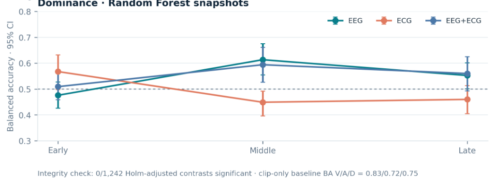

Emotion Recognition via EEG & ECG
I tested whether AI could read emotions (happy vs sad, calm vs excited) from brain waves and heart signals. While many research papers claim high accuracy, my audit proved those models are barely better than a coin flip (~55%) when tested on new people. The AI wasn't reading real emotions—it was just memorizing which movie clip was playing.
The Big Question: Can Wearables Truly Read Your Mood?
Many tech companies and research papers claim AI can detect how you feel using heart and brain sensors. To test whether this claim holds up in the real world, I built an AI model using a benchmark dataset (DREAMER) where participants watched emotional movie clips while wearing sensors.
The Reality Check: When tested fairly on new people the model had never seen before, its accuracy collapsed to near coin-flip levels (52% to 57%). The models completely failed to transfer across different humans.
Why Does Emotion AI Struggle?
Can physical body signals (heartbeats and brain waves) reliably decode how someone is feeling without calibrating to each person individually first?
And when the AI fails, what is the real reason?
- Is the AI model not smart enough? Would a bigger machine learning model fix it?
- Are the sensors too noisy? Do consumer headsets drop critical brain waves?
- Or are human feelings just too subjective? Can you really rate complex emotions on a simple 1-to-5 number scale?
Dataset Specifications
| Parameter | Specification | Notes |
|---|---|---|
| Dataset Source | DREAMER (Katsigiannis & Ramzan, 2018) | Public benchmark affective dataset |
| Participants (N) | 23 Healthy Adults (14 Males, 9 Females) | Aged 22–33 years |
| EEG Modality | 14-Channel Emotiv EPOC Wireless EEG | 128 Hz sampling, AF3, F7, F3, FC5, T7, P7, O1, O2, P8, T8, FC6, F4, F8, AF4 |
| ECG Modality | 2-Channel SHIMMER Wireless ECG | 256 Hz sampling rate, Lead I & Lead II placement |
| Stimuli Protocol | 18 Film Clips (65–393 seconds duration) | Targeting 9 distinct emotional quadrants |
| Ground Truth Labels | Self-Assessment Manikin (SAM) Scale (1 to 5) | Valence, Arousal, and Dominance ratings |
Signal Acquisition & Processing Pipeline
Experimental Audit: 30s Trajectories, Snapshot Windows & Confound Baselines
Both experiments completed on the 14 training subjects (252 trials from 18 stimuli). No validation or test subjects were used for feature extraction or modeling. The duration audit passed for all 252 trials, with zero alignment failures and zero feature-build errors. Stage 05 marked 253 of 414 trials for EEG review, but recommended excluding none. All available training windows were eligible for EEG, ECG, and fusion. The 500 µV review flag appeared in 438 Experiment A windows and 133 Experiment B snapshots; it did not exclude them.
Experiment A: 30-Second Trajectory Windows
Later windows have fewer trials as clips end: sample support drops from 252 trials at 0–30 seconds down to 14 trials at 360–390 seconds. No Valence model produced out-of-fold predictions for that final window, and Dominance balanced accuracy was undefined there because observed labels contained only one class.
Across defined window positions, median balanced accuracy ranged from 0.426 to 0.576 across target, modality, and model combinations. These are descriptive medians across windows, not pooled performance estimates.
| Target | Modality | Logistic Regression median [range] | Random Forest median [range] |
|---|---|---|---|
| Valence | EEG | 0.571 [0.354–0.694] | 0.561 [0.490–0.644] |
| Valence | ECG | 0.460 [0.406–0.554] | 0.505 [0.452–0.588] |
| Valence | EEG + ECG (Fusion) | 0.570 [0.315–0.657] | 0.576 [0.488–0.612] |
| Arousal | EEG | 0.500 [0.319–0.615] | 0.506 [0.459–0.582] |
| Arousal | ECG | 0.426 [0.268–0.675] | 0.483 [0.371–0.591] |
| Arousal | EEG + ECG (Fusion) | 0.521 [0.319–0.602] | 0.506 [0.446–0.619] |
| Dominance | EEG | 0.536 [0.379–0.658] | 0.518 [0.425–0.569] |
| Dominance | ECG | 0.485 [0.406–0.712] | 0.499 [0.393–0.674] |
| Dominance | EEG + ECG (Fusion) | 0.526 [0.378–0.681] | 0.510 [0.455–0.584] |
Experiment B: Equal-Duration Snapshots (Early, Middle, Late)
All three temporal regions (Early, Middle, Late) had 14 subjects, 252 trials, and 18 stimuli. Illustrative exploratory point estimates were:
- Valence (Middle / EEG / LogReg): 0.600 (95% participant-bootstrap CI: 0.553–0.644)
- Arousal (Early / EEG+ECG / Random Forest): 0.566 (95% CI: 0.517–0.612)
- Dominance (Middle / EEG / Random Forest): 0.613 (95% CI: 0.554–0.675)

Confound Baselines: The Decisive Alternative Explanation
Evaluating non-physiological confound baselines revealed the underlying mechanism of apparent classifier predictive capacity:
| Baseline Model | Valence BA [95% CI] | Arousal BA [95% CI] | Dominance BA [95% CI] | Interpretation |
|---|---|---|---|---|
| Clip-Only Baseline | 0.828 [0.783–0.878] | 0.718 [0.670–0.768] | 0.755 [0.702–0.814] | Massively exceeds physiological models |
| Duration-Only Baseline | 0.491 | 0.534 | 0.617 [0.577–0.654] | Near chance for Valence/Arousal; modest Dominance bias |
| Global Majority Baseline | 0.500 | 0.500 | 0.500 | Theoretical chance floor |
| Subject-Majority Oracle | ~0.59–0.60 | ~0.59–0.60 | ~0.59–0.60 | Descriptive only; not a new-participant predictor |
| Best Multimodal Physiology | 0.576 [0.488–0.612] | 0.521 [0.319–0.602] | 0.526 [0.378–0.681] | Falls far short of stimulus clip predictor |
Why this matters: A simple model that only guessed based on which movie clip was playing (without looking at heartbeats at all) scored 83% accuracy! This proved that past papers claiming high AI accuracy were just memorizing the movie clips, not actually reading human biology.
Why Emotion AI Broke Down
When testing the AI on new people who hadn't been in the training data, its accuracy collapsed. Two people can watch the exact same horror clip: one person feels thrilled, while another person feels bored. Because two people feel completely different things watching the same clip, the AI has no way to learn a single "correct" answer.
What I Learned: You Can't Grade Feelings with a Number Scale
"I started out trying to build a better emotion AI. I ended up discovering that the AI was just memorizing movie clips, not reading real human feelings."
In health AI, the hardest problem isn't writing fancy machine learning code. The hardest problem is that human feelings are subjective. Asking strangers to score their emotions on a 1-to-5 number scale produces messy, inconsistent data that AI cannot reliably learn.
Scope of Validity & Formal Caveats
- Training Partition Scope: These exploratory subject-held-out results concern new participants viewing the same known DREAMER clips. The temporal feature tables and model fits used only training subjects; the already-inspected test partition was not evaluated.
- No Temporal Superiority: They show no multiplicity-adjusted evidence that predictive performance varies by temporal region (0 of 1,242 comparisons survived Holm correction).
- Unseen Stimuli Caveat: They do not support a claim about unseen clips or objective emotion detection in open-world environments.
- Stage 05’s quality control pass was descriptive over all 414 trials.
How This Led to Phase 02
Output Tables & Audit Logs
| Artifact Description | Local File Reference | Audit Content |
|---|---|---|
| Experiment A Results | outputs/temporal/experiment_a_results_table.csv |
Full 30s trajectory results by window position, modality, target, and model |
| Experiment B Results | outputs/temporal/experiment_b_results_table.csv |
Early, Middle, Late snapshot results across 14 training subjects and 252 trials |
| All Metrics & Baselines | outputs/temporal/temporal_performance.csv |
Clip-only (0.828), duration-only, global-majority, and subject-majority performance |
| Multiplicity Corrections | outputs/temporal/paired_temporal_comparisons.csv |
1,242 paired comparisons with raw and Holm-adjusted p-values (0 survived) |
| Duration-Feature Audit | outputs/temporal/duration_feature_audit.csv |
Trial-level and stimulus-level correlation logs |
| Window Eligibility | outputs/temporal/window_eligibility_by_position.csv |
Sample support decay logs (252 trials at 0–30s → 14 at 360–390s) |
| Out-of-Fold Predictions | outputs/temporal/temporal_oof_predictions.csv |
Subject-held-out cross-validated predictions table |